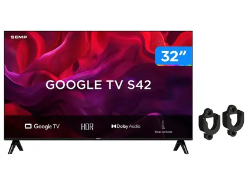
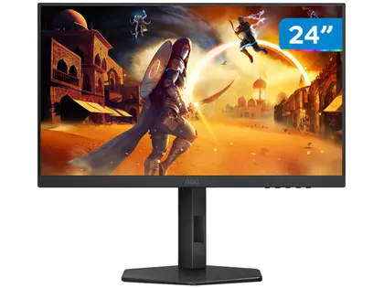

Smart TV 43" Samsung 4K UHD - UN43U8600FGXZD

R$1899,05 à vista
R$1999,00 em 10x de R$199,00 sem juros
Detalhes
Smart TV 55" LG UHD com IA - 55UA8550PSA

R$2909,85 à vista
R$3063,00 em 10x de R$306,30 sem juros
Detalhes
Smart TV 32" SEMP HD 32S42 + Suporte p/TV

R$949,05 à vista
R$999,00 em 5x de R$199,80 sem juros
Detalhes
Monitor 24" AOC FHD 180Hz 24G4

R$699,00 à vista
R$699 em 7x de R$99,86 sem juros
Detalhes
FAQ
Qual a diferença entre: Full HD (FHD), Ultra HD (UHD), 4K, etc.?
As resoluções de imagem indicam o nível de detalhe que a TV consegue exibir. A Full HD (FHD) possui 1920x1080 pixels, oferecendo boa qualidade para telas menores. Já a Ultra HD (UHD), também chamada de 4K, tem 3840x2160 pixels — ou seja, quatro vezes mais detalhes que o Full HD, resultando em imagens mais nítidas e realistas, especialmente em telas maiores. Hoje, as TVs 4K são o padrão mais comum no mercado, enquanto resoluções superiores, como 8K, ainda são menos populares.Televisões Smart precisam de internet o tempo todo?
As TVs Smart não precisam de internet o tempo todo para funcionar. Você pode assistir normalmente a canais abertos, usar entradas HDMI (como videogames ou TV a cabo) e outros recursos offline. No entanto, a conexão com a internet é necessária para acessar aplicativos de streaming, como filmes e séries, além de atualizar o sistema e aproveitar todas as funcionalidades inteligentes da TV.